Research Skills — Week 2
Last week:
This week: how to summarise and visualise data — and how to tell whether a number is big or small.
Submit questions:
PollEv.com/geol
text geol to 07480 781235
🎓 Concept block 1
Compress thousands of numbers into a few useful ones.
Three questions about any dataset:
The “balance point.”
Sensitive to extremes.
Pull one value way up → mean shifts.
The middle value.
Robust to extremes.
Pull one value way up → median barely moves.
When do they differ? When the distribution is skewed.
Spread matters as much as centre. A mean of 10 with SD of 1 is very different from a mean of 10 with SD of 50.
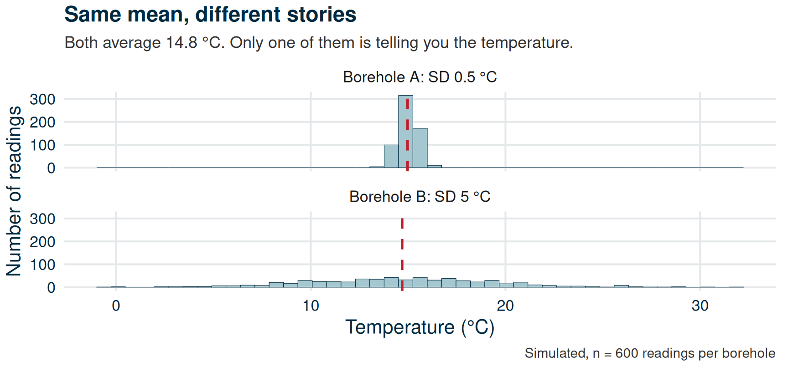
Figure 1
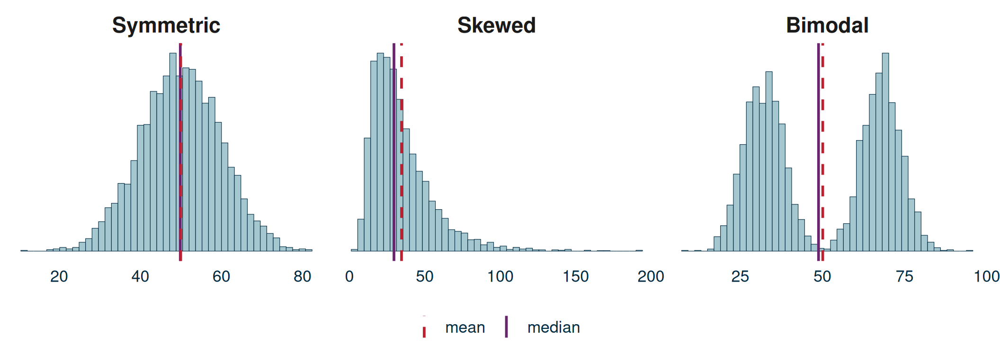
Figure 2
Skewed: the mean chases the tail — income, grain size, ore grades.
On the bimodal panel, the mean and median both land in the valley — a value that describes almost none of the data.
Two populations. Report one average and you have described neither.
Camelus bactrianus — PhyloPic, CC0
Always look at the distribution, not just the mean.
💬✏️ Exercise 1
Tim Harford, who presents BBC Radio 4’s More or Less.
PopTech, CC BY-SA 2.0
UK biomass electricity: 38 TWh/year.
Big or small? Compared to what?
Total UK electricity is ~320 TWh. So biomass ≈ 12%.
Drax power station emits 12 Mt CO₂/year.
UK total CO₂: ~340 Mt. Drax is ~3.5% of the national total — from one building.
A single wind turbine produces about 6 GWh/year.
A UK household uses ~3,500 kWh/year. One turbine ≈ 1,700 homes.
Every time you see a number in this module, ask:
And its companion: “Compared to what?”
🎓💻 Concept block 2
Four of these, right now. Three more in the exercise.
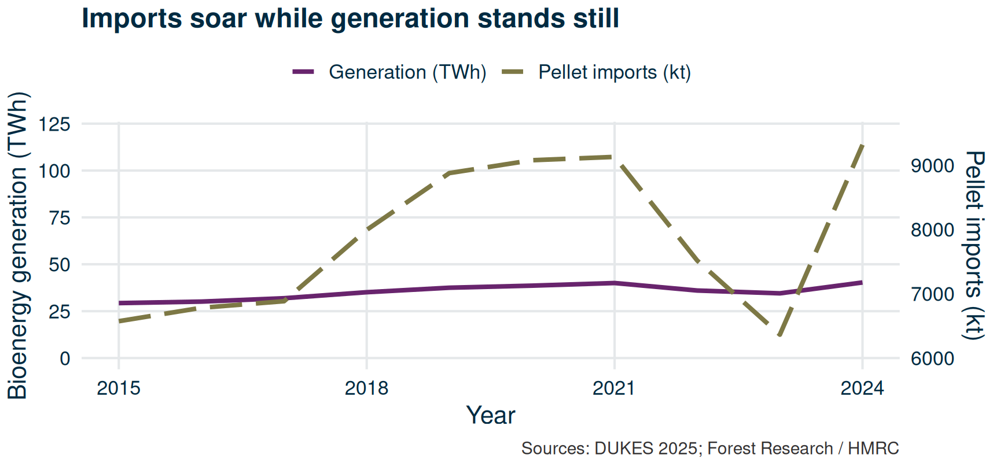
Figure 3
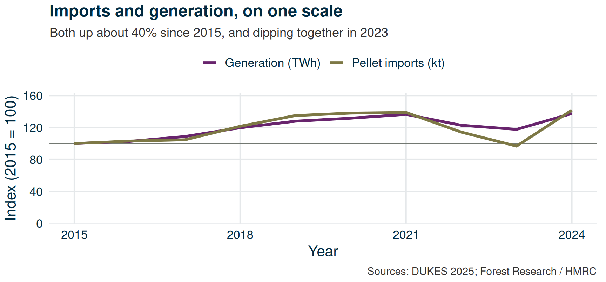
Figure 4
Fix: put both series on one scale. Indexed to 2015, imports and generation move together — which is what you would expect if the pellets are being burnt at a roughly constant efficiency.
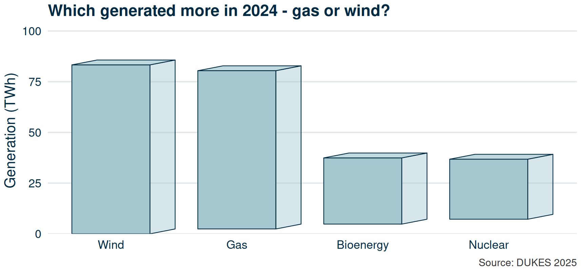
Figure 5
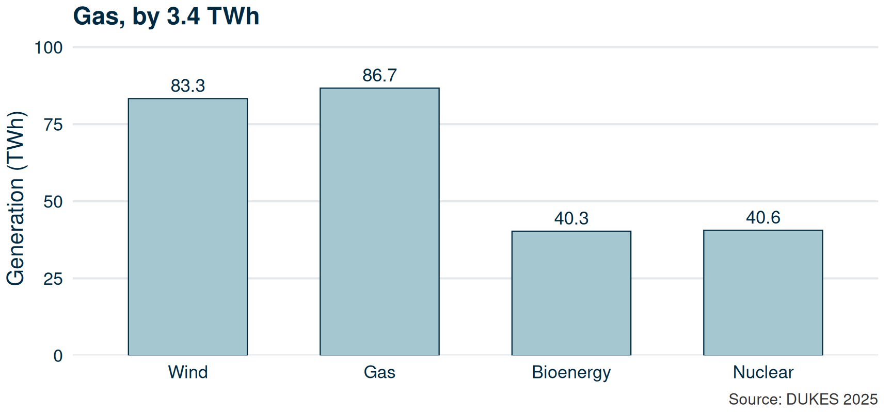
Figure 6
Fix: no third dimension — there is no third variable. Where the gap is smaller than the ink, print the numbers.
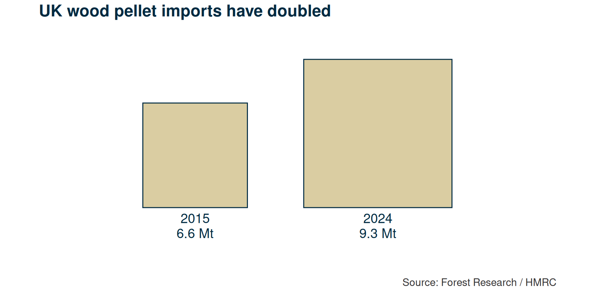
Figure 7
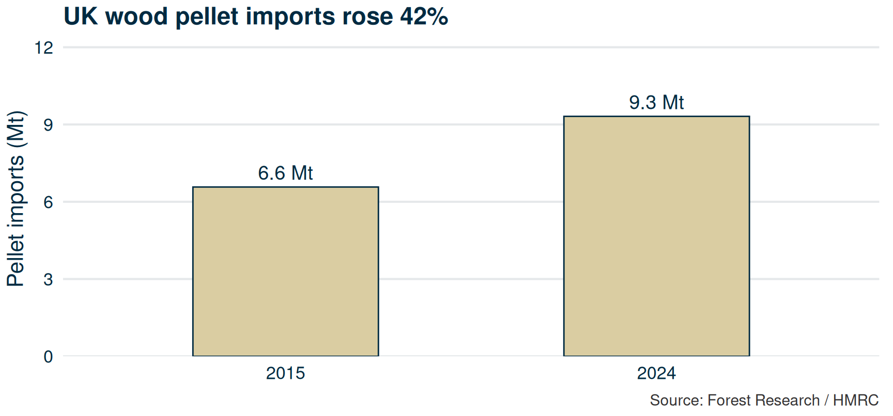
Figure 8
Fix: encode with length from a common baseline. It is the one channel the eye reads accurately — and it comes with an axis to check.
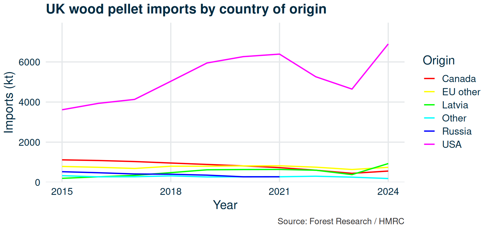
Figure 9
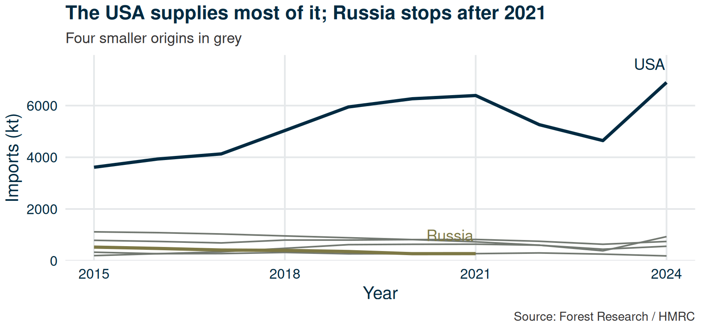
Figure 10
Fix: colour the story, grey the context, label on the line. Colour is a scarce resource — spend it where the reader should look.
Data + Aesthetics + Geometries = a plot.
Data: A plot is just one way of displaying the data. Analyses don’t start with “I’d like to see a bar chart”, but with “What do these data tell me?”
Aesthetics: Translation layer: Which variable controls which visual channel? Channels: x, y, colour, plotting symbol…
Establishes the rules – doesn’t plot anything itself.
Geometries: What physical mark displays the visual channels?
Everything in ggplot2 follows this pattern.
✏️ Exercise 2
I’ll show you some deliberately misleading charts.
For each one: what’s wrong, and how would you fix it?
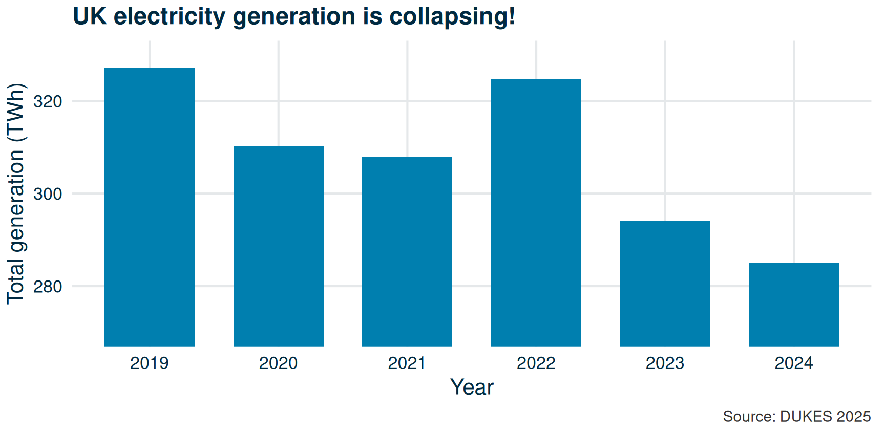
Figure 11
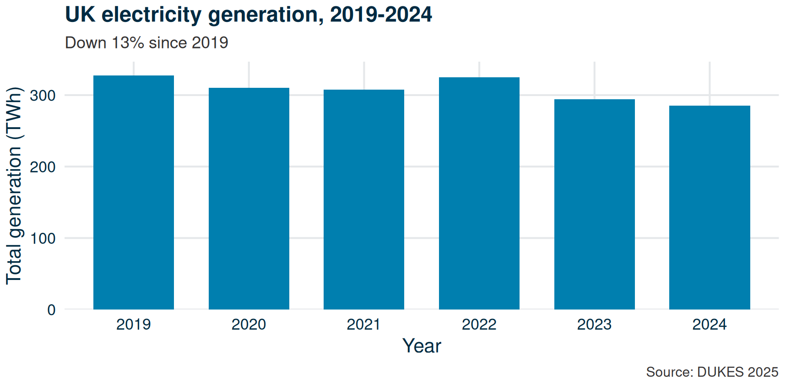
Figure 12
Fix: Start the y-axis at zero for bar charts. The bar’s length encodes the ratio, so a non-zero baseline breaks the encoding.
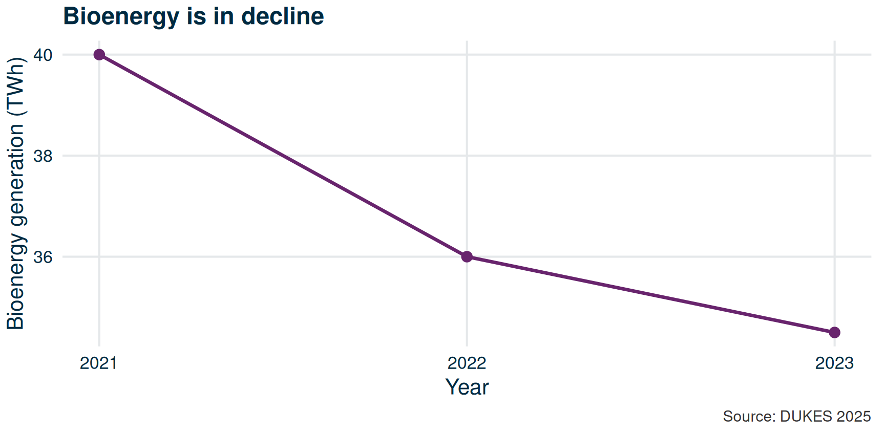
Figure 13
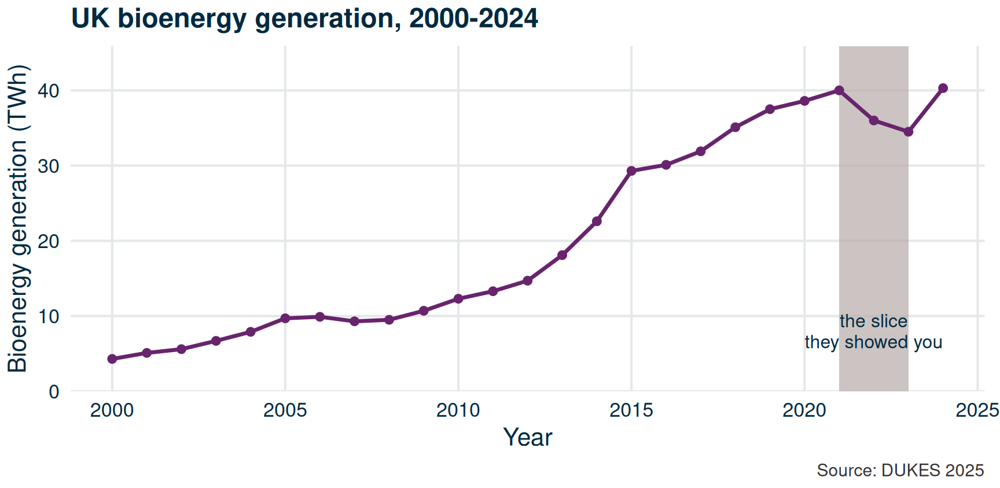
Figure 14
Fix: Show the full time range. Bioenergy grew from 4 TWh (2000) to 40 TWh (2024) — a tenfold increase hidden by that window.
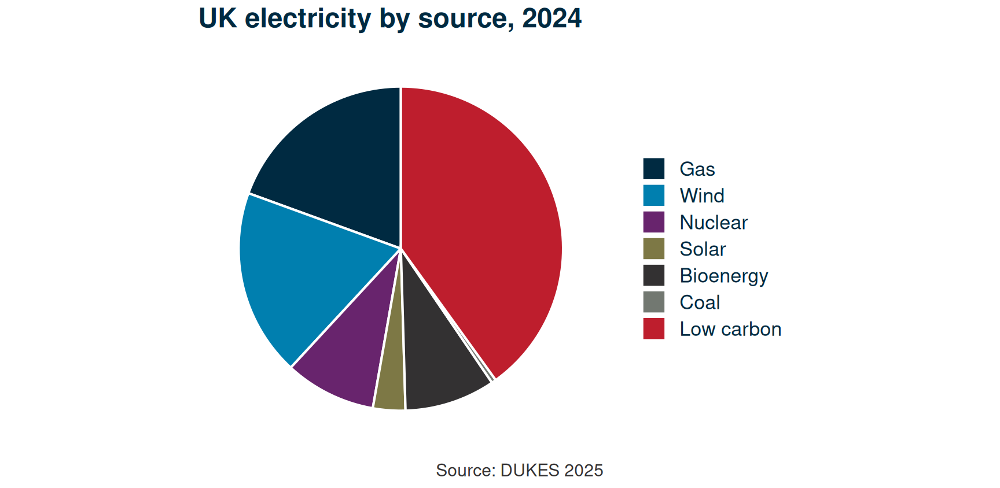
Figure 15
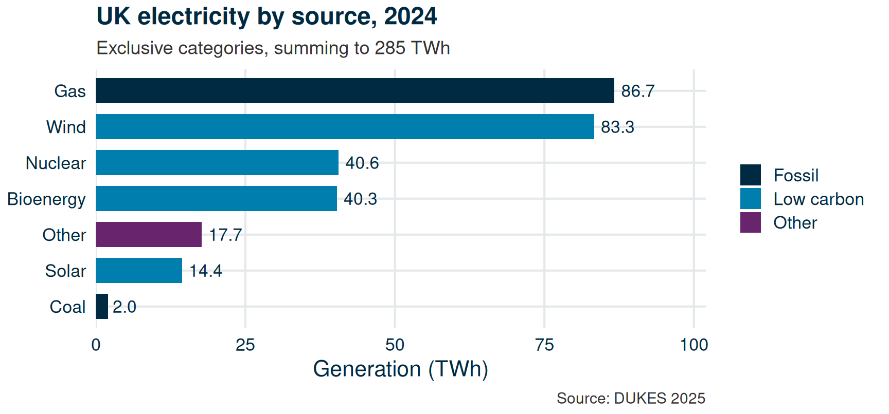
Figure 16
Fix: “Low carbon” double-counted Wind + Nuclear + Solar + Bioenergy, so the slices summed to 156%. An overlapping category is a shading, not a slice — and bars are sortable, labelable, and they add up.
🎓 Concept block 3
A histogram shows you what the mean and SD cannot:
The familiar bell curve. Appears when many small, independent effects combine.
Central Limit Theorem (informally): averages of large samples tend toward normal, even if the underlying data aren’t.
This is why so many statistical tests assume normality — and why they often work even when the raw data are messy.
Many geological measurements are log-normal: skewed right, with a long tail of large values.
When data are log-normal, the mean can be very different from the typical value.
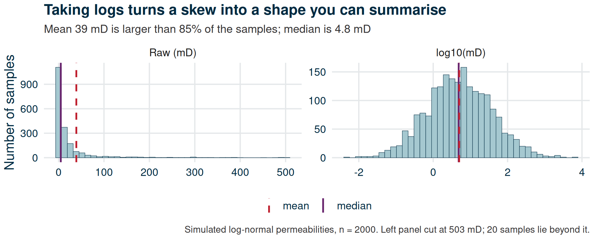
Figure 17
If your data:
Then log() often makes them more symmetric and easier to analyse.
✏️💻 Integrative exercise
Open WebR. Using the biomass data:
This is a check that you’re comfortable with ggplot2 syntax before the application session.
UK biomass electricity output was 37 TWh in 2024. A classmate says: “That’s a lot — it must be making a real difference.”
What’s the most important question to ask first?
PollEv.com/geol
text geol to 07480 781235
Submit questions:
PollEv.com/geol
text geol to 07480 781235
Application session: “Making the biomass case”
You’ll produce the figures that will go into your briefing.